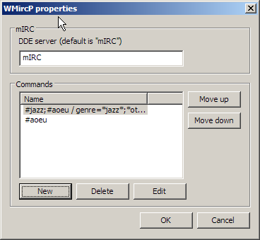
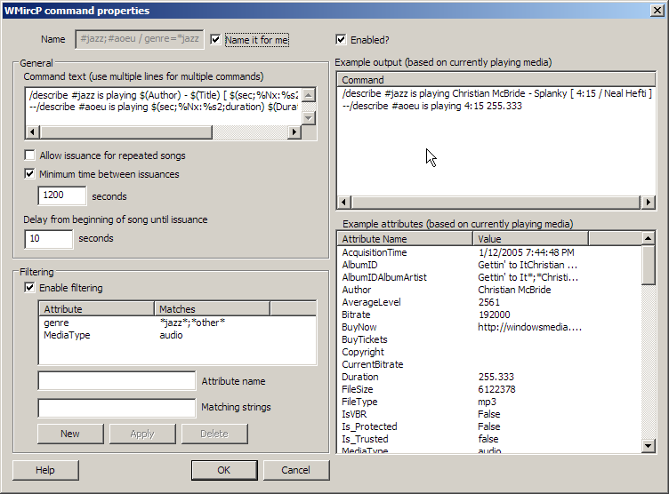

Aug 22, 2005
Carl Corcoran
http://carl.ript.net/WMircP
Introduction
Features
Installation
General notes on usage
Properties screen
Command properties screen
WMircP is a plugin for Windows Media Player 10 which sends messages to mIRC based on the currently playing media. Typically you would use this to do an automatic "Now Playing" message in mIRC.
If you don't know what mIRC is, then you don't need this.
WMircP was written for fun, simply because the current ones suck badly. The down-side to WMircP is that it's pretty complicated. It has a bunch of features, but that makes it a little less friendly to use. I have done a great deal to make it very stable and predictable.
Installation should be automatic with the installer. WMircP is really just one DLL that self-registers. If you need to register it manually, go to the command prompt and type:
regsvr32 "[dir]\WMircP\WMircP.dll"
Where [dir] is the directory in which WMircP is installed. To see if it's installed, open up Windows Media Player, and open up the Options screen. Go to the "Plug-ins" tab, and select the "Background" category. You should see WMircP listed in the right side. See the screenshot below to see what it should look like:
Configuring WMircP is essential to get it to do what you want. To configure WMircP, select WMircP on the options screen shown above, and choose "Properties". From here you can configure all of WMircP's features.
You will want to first create a new command, and configure it to send some text to mIRC. Examples of command text are shown below.

"DDE server" - mIRC uses a named DDE server for communicating with WMircP. In 99.999% of cases, you can leave this as the default.
"Commands" - this is a list of the different commands you have configured for WMircP. When a song is played, each of these commands is processed. Each command has its own set of attributes. Commands are processed from the top of this list to the bottom. Note: Commands are processed each time Windows Media Player switches to the "Playing" state - not just when you first start playing media.
"New" - this creates a new blank command. See below for notes about the Command properties screen
"Delete" - this will delete the currently-selected command.
"Edit" - this will open up the command properties screen for the currently selected command.
"Move up" / "Move down" - these buttons will move the currently selected command up or down. Since commands are processed from top to bottom in this list, this can change the order in which they are processed.

"Name" - This is the name of the command. Name it whatever you want. This field is grayed out if you choose "Name it for me".
"Name it for me" - If this is checked, WMircP will try to come up with a descriptive name for the command automatically. If not checked, then you can pick any name you want.
"Enabled" - If this is checked, then this command will operate normally. If it's not checked, then it will be skipped during command processing.
"Command text" - Enter the actual command text that will be sent to mIRC. You can send multiple commands by putting them on separate lines. The command text here is the same stuff you would type into the mIRC command line. Typical commands start with "/amsg", "/describe", "/msg", or "/ame". Read the mIRC help documents for help on the syntax of the commands. If you prefix a command line with two dashes ('--'), it will be ignored by WMircP (it will be treated as a comment).
"Allow issuance for repeated songs" - If this is checked, then the command will be issued even if you are playing the same song as the previous issuance. In other words, say you start playing "Song for DiFang". Then you double-click and play it a 2nd time in a row. If this option is checked, WMircP will issue the command again. If this option is unchecked, WMircP will say "oops, duplicate play", and ignore the command.
"Minimum time between issuances" - Use this option if you want to limit the frequency of commands. Many IRC channels will get annoyed if you issue an automated message every time you play a new song. By using this option, WMircP will guarantee not to send messages for the specified number of seconds. A typical value might be 1200 seconds, equivelant to 20 minutes.
"Delay from beginning of song until issuance" - WMircP will wait this number of seconds from the time the status changes to PLAY to the time it issues the command. In other words, say you set this option to 10 seconds. You start playing "Song for DiFang". 10 seconds later, WMircP will send the command to mIRC. Why would you use this? Well I found that often I would have a huge library on random, and many songs I would just skip over. So it doesnt make much sense to broadcast that I am playing them. By setting a 10 second delay, I could have time to switch songs.
"Enable filtering" - Check this option to enable filtering by media attribute. Each command can have several filters applied to it. Each filter must match in order for the command to be issued. Using this, you can limit what media gets broadcast in commands. A typical use would be to limit only to audio files, or limit only to a certain genre. In the future it would make sense to add more complex filtering based on a mathematical expression (such as, 'only issue the command for songs whose bitrate is greater than 128kbps' or something).
"Attribute name" - Enter the full proper name of the attribute you want to filter. For a list of example attributes you can look at the "Example Attributes" list on the right. Note: Some media files may have attributes filled in that others don't.
"Matching strings" - Enter the text that the attribute must match. This is NOT case-sensitive (meaning that capital/lowercase is ignored). The attribute must exactly match this string for the filter to match. Wildcards '*' and '?' are supported (like Windows pattern matching). You can separate multiple options by semi-colon. For instance, if the attribute name is "Genre" and the matching string is "*jazz*;*other*", then the filter would match any media whose genre contains the text "jazz" (such as "jazzy pop" or "post-bop jazz") or contains the text "other". If the matching string is "jazz", then the filter matches any media whose genre is exactly "jazz". It would not match "acid jazz" or "jazzy pop"
"New" - Click this to create a new filter with the information currently in "Attribute Name" and "Matching Strings".
"Apply" - Click this to modify the currently selected filter to the values currently in "Attribute Name" and "Matching Strings"
"Delete" - Click this to delete the currently selected filter
"Example output" - This shows what commands would be sent to mIRC based on the currently playing media. Note that commented commands (commands which start with two dashes '--') DO get entered into this list even though they would be ignored during actual processing.
"Example attributes" - This is a list of the available attributes for the currently playing media. Note that different media may have different attributes filled in. Some attributes are common to almost all media such as "Duration", "FileSize", "FileType", "MediaType", "SourceURL", and others.
Commands:
Variable format:
Field format:
Example variables:
Example commands:
/describe
/alias play /describe #jazz ...
prefix a command with two hyphens to disable it.
Commands are processed every time Windows Media Player switches to "playing" state. This means that commands are processed when you un-pause a song that's in the middle of playing.